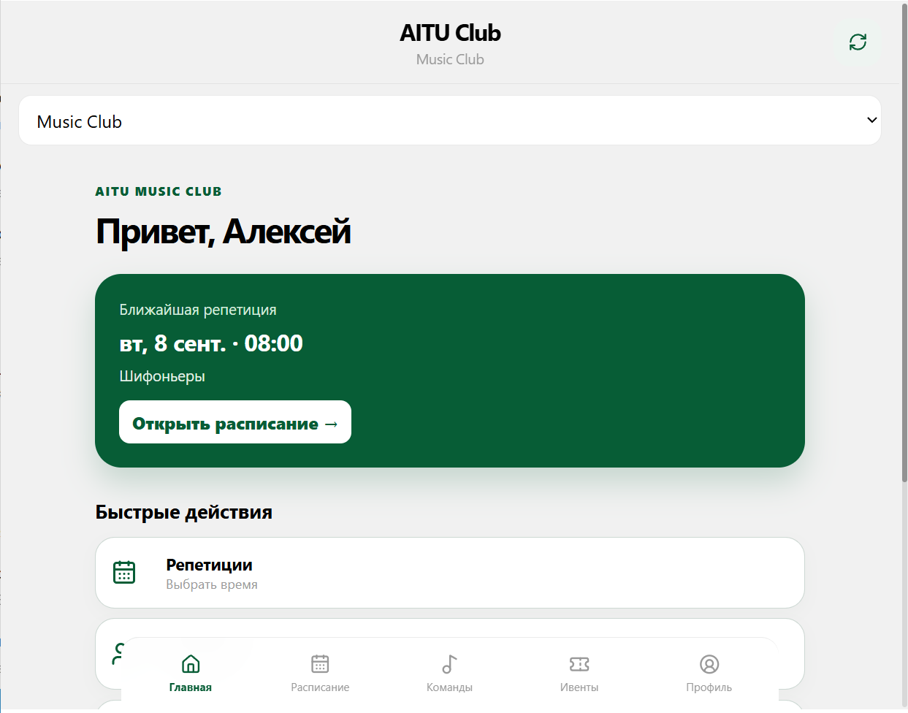
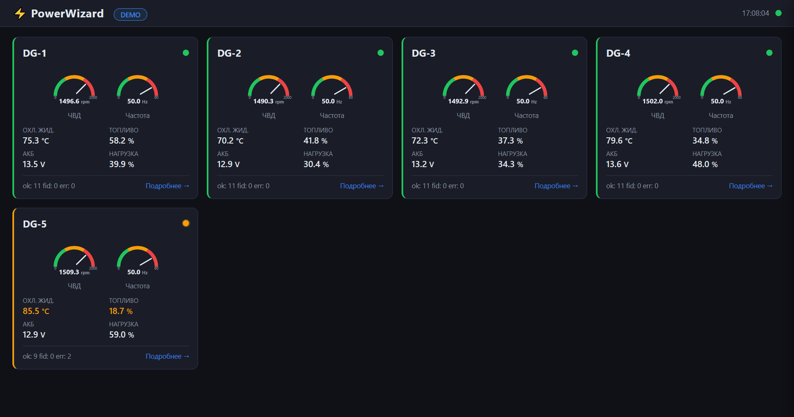
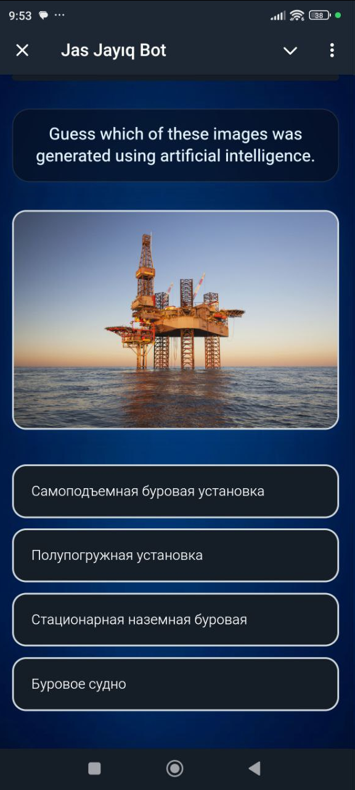
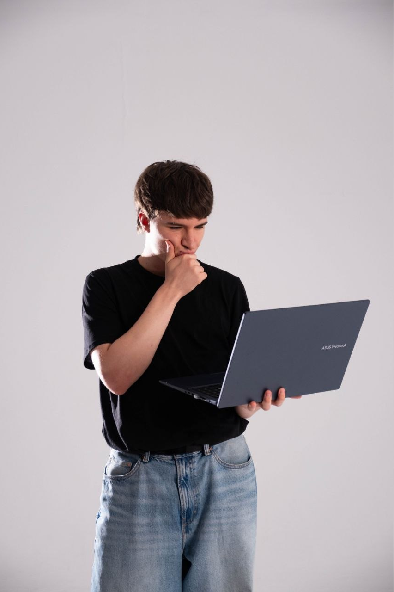

01 / 03
Independent product · ongoing
AITU Clubs
Removed manual work from club management, rehearsal booking and event preparation.
100+ usersBuilt independentlyIn active use

Real interface · Telegram Mini AppI clarify requirements, propose a practical solution, build it and put it into real use. Web services, Telegram applications and backend systems for businesses, events and internal operations.
Products used by real people—at university, in business and in industry.
Removed manual work from club management, rehearsal booking and event preparation.

Real interface · Telegram Mini AppBuilt a system that automatically collects and displays industrial generator data.

In production at the client’s facilityBuilt the backend for one platform adapted to two events in Astana and Atyrau.

Trilingual Telegram Mini AppYou don’t need a finished technical brief—start by explaining the problem.
We clarify the process, users and expected outcome.
We define core features, timeline and technical approach.
I demonstrate progress and incorporate feedback.
I deploy the product, verify it in use and provide instructions.
Commercial development, independent products and teaching.
I build products around real client problems—from requirements and architecture to the interface, server and installation.
Worked on internal products for a company automating restaurant operations.
I teach individual and group lessons, both online and in person.
I don’t stop at writing code — I take responsibility for the launch.
I can join an established backend project or take ownership of the whole product. I work with clients who do not yet have a technical specification, identify what matters and find a practical solution.
I study Computer Science at Astana IT University from 2024 to 2027, teach Python and continue developing my own product for university clubs.

Have a problem, but no technical solution yet?
Tell me which process you need to simplify or which product you want to launch. I’ll help define the first release and suggest a practical way to build it.